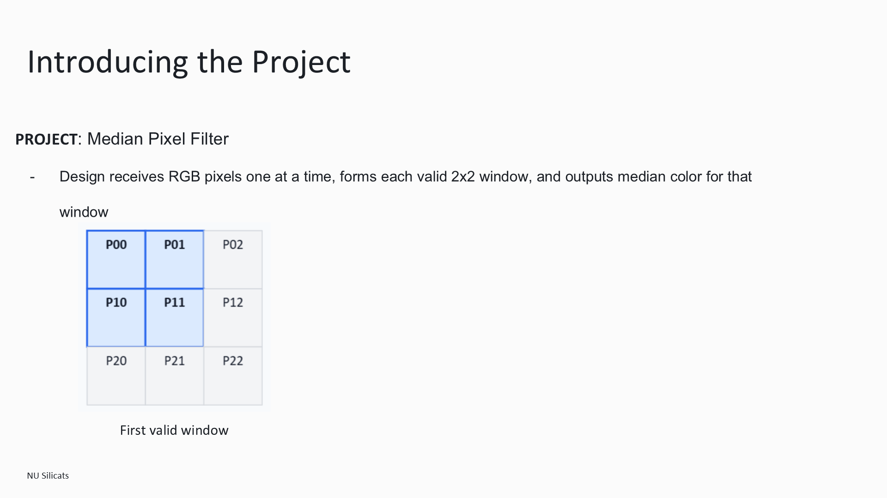
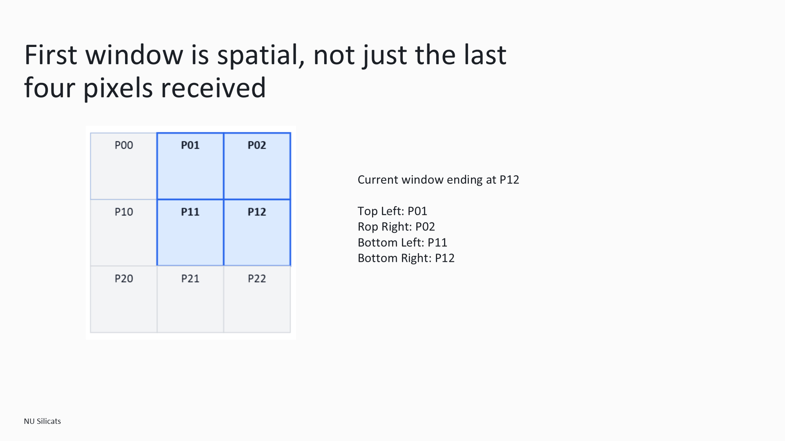
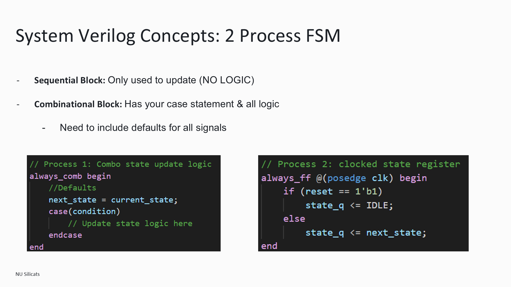

Streaming RGB
Median Filter
A streaming 2×2 RGB median filter with a self-checking SystemVerilog testbench that compares output pixels against reference CSV data.
- Language
- SystemVerilog
- Verification
- Reference CSV input and output vectors
- Context
- NU Silicon Initiative


Design and verification
I implemented the streaming pixel filter in SystemVerilog and built a testbench to check output pixels against reference data. The repository includes the filter, pixel package, testbench, and CSV test vectors.
The filter uses a line buffer and row/column counters to assemble a spatial 2×2 window. Each RGB channel is sorted separately; the two middle values are averaged with rounding up. Input gaps hold the pixel position and stored history, and the output-valid flag marks each registered result.


Teaching digital design
As Digital Design Lead for the NU Silicon Initiative, I develop onboarding material that combines hardware fundamentals with SystemVerilog coding exercises to prepare new members for RTL projects and verification.
The onboarding material covers modules, signal widths, combinational and sequential logic, reset behavior, timing, finite-state machines, memory, and valid signals. The pixel-filter exercise connects those concepts to a complete streaming design.

